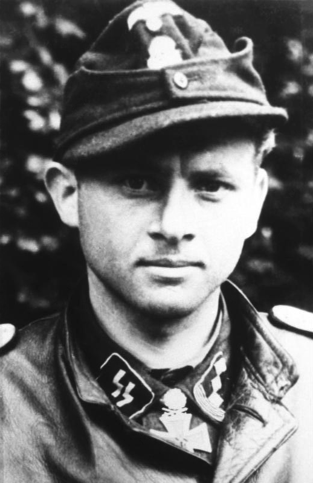
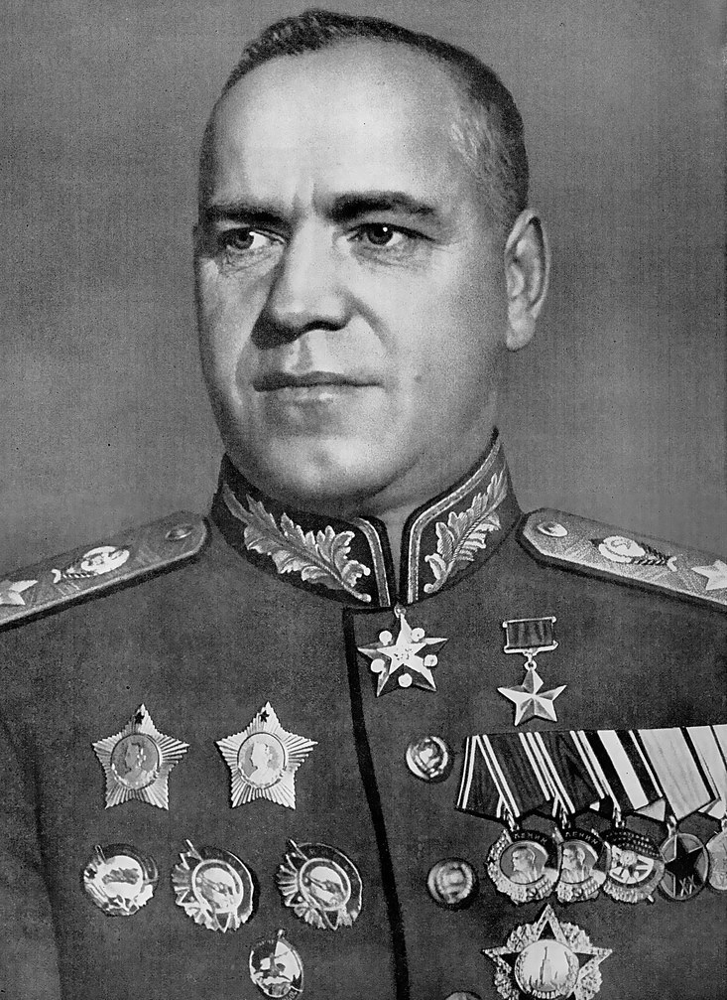
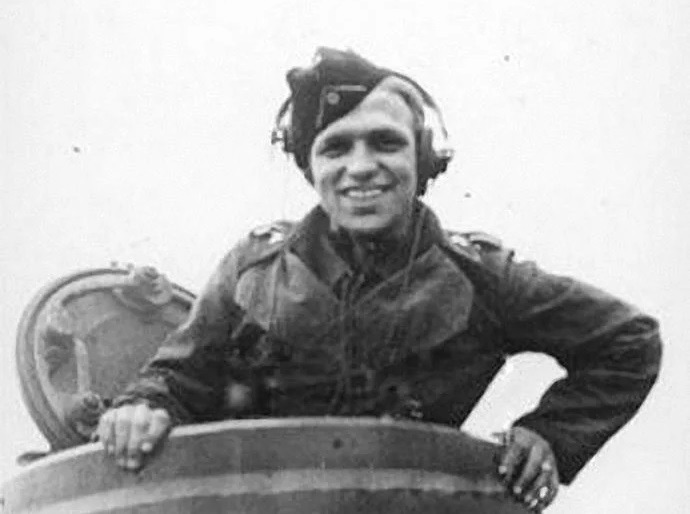
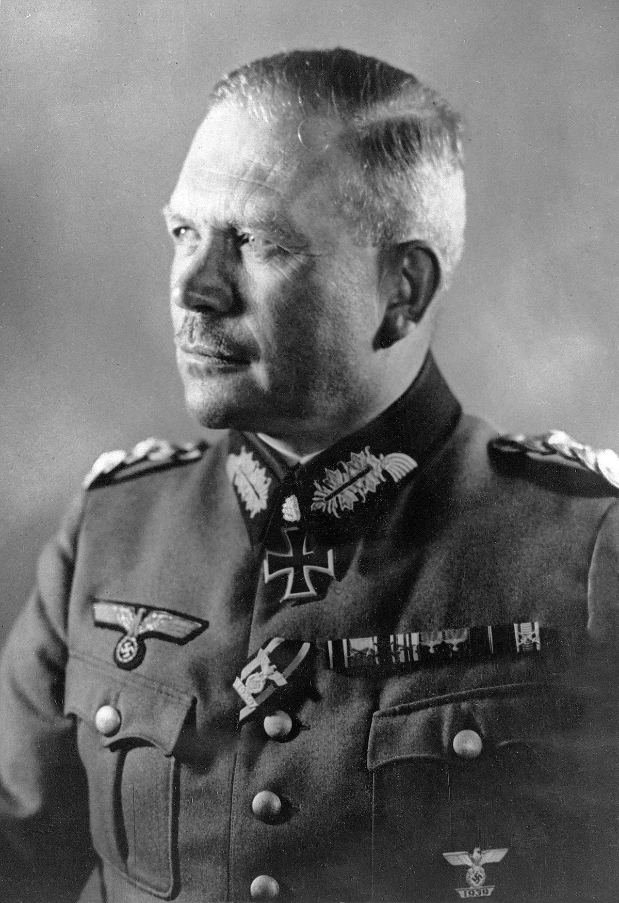
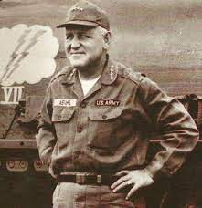

Led most lethal tank attack. Credited with destroying 138 tanks, 132 antitank guns, and uncounted other vehicles on the Russian front and at Normandy, SS-Hauptsturmführer Wittmann is best known for his rampage against the British 7th Armored Division outside Villers-Bocage in June 1944, devastating as many as 14 tanks, 2 antitank guns, and 15 other vehicles in 15 minutes. He was finally cornered and killed in his Tiger I tank by five British or Canadian Shermans on August 8, 1944.
Top tank commander in modern history. During the Battle of Golan Heights in 1973, “Zwicka” Greengold of the 188th “Barak” (Lightning) Brigade organized a small scratch force that prevented two large Syrian armored formations from breaking through Israeli lines. Commanding from a series of a half dozen Centurion tanks as each was knocked out, Greengold fought for 20 hours, destroying between 20 and 40 Syrian vehicles before dropping to the ground, wounded, burned, and exhausted, with the words, “I can’t anymore.” He was awarded the Itur HaGvura, Israel’s highest medal of valor.
World War II’s top tank strategist. Zhukov made his mark using tanks to flank and annihilate the Japanese 23rd Division at Khalkin Gol in August 1939, as Japan attempted to expand its control from occupied Manchuria into Soviet Mongolia. He went on to integrate armor into the Red Army and win the war’s greatest land campaigns, including Moscow (1941), Stalingrad (1942), Kursk (1943), lifting the siege of Leningrad (1944), Operation Bagration (1944), and taking Berlin (1945).
Top tank ace in history. Advancing from loader to gunner to commander in Panzer IVs, Tigers and Tiger IIs on the Russian front and in Normandy, Hungary, and Moravia, Knispel was officially credited with 168 Allied tanks destroyed—including a T-34 hit at almost two miles away—more tanks than any other tanker ever. He was killed in action on April 28, 1945, at age 23, just days before Germany surrendered.
Father of armored blitzkrieg. Putting Monash’s combined-arms mechanized tactics and postwar theory into high-speed practice, Guderian synthesized the blitzkrieg strategy that helped Germany overrun Poland in 1939. At the Meuse River in 1940 he ignored orders to halt and thrust deep into France. Ironically, following victories in Russia, he lost his field command after prudently retreating before the Soviet counterattack outside Moscow in 1941.
Top U.S. tank commander in the war. I’m supposed to be the best tank commander in the Army,” Patton once said, “but I have one peer—Abe Abrams.” Leading the 37th Tank Battalion from the front, Abrams and the crew of his own M4 Sherman tank, Thunderbolt, are estimated to have destroyed about 50 German armored fighting vehicles.
